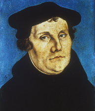
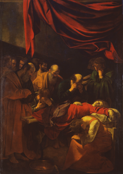
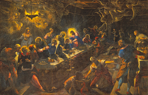
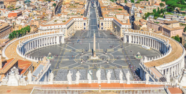
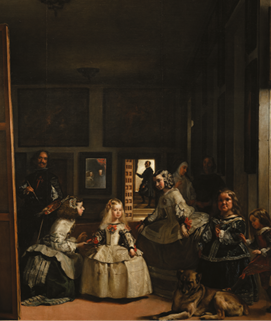
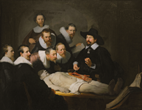
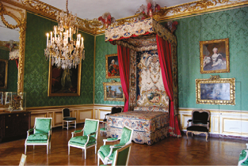
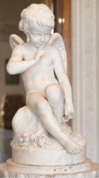

El Greco. Espólio , c. 1579. Óleo sobre tela, 2,85 m x 1,73 m. Sacristia da Catedral de Toledo, Espanha.
Universal History Archive/Shutterstock/Catedral de Toledo
O Barroco surge no seio da Igreja Católica, com traços originados durante o Renascimento, mas sem o destaque da razão. Seus temas são a religiosidade e a mitologia, marcados pela dramaticidade e pela expressão de sentimentos. O retrato é o gênero de pintura privilegiado por essa escola.
Como desdobramento da arte barroca, surge o Rococó, gênero mais leve e intimista, que mantém a valorização das curvas do Barroco, porém dando destaque a elementos decorativos e ornamentais, como laços e flores.
Este capítulo busca examinar o Barroco e o Rococó na Europa, destacando o contexto sociocultural, as principais características e alguns de seus expoentes.
Neste capítulo serão abordadas as habilidades EM13LGG601, EM13LGG602, EM13LGG603 e EM13LGG604.
BUONARROTI, Michelangelo. O juízo final (detalhe), c. 1536-1541. Afresco, 13,7 × 12,2 m. Capela Sistina, Roma.
Alonso de Mendoza/Wikimedia Commons/Capela Sistina, Roma
POZZO, Andrea. A glória de Santo Inácio , 1692-1694. Afresco. Igreja de Santo Inácio de Loyola, Roma.
Bruce McAdam (CC BY-SA 2.0)/Wikimedia Commons/Igreja de Santo Inácio de Loyola, Roma
Barroco na Europa
A arte barroca desenvolveu-se na Europa, durante os séculos XVII e XVIII, em diferentes linguagens artísticas. Originária da Itália, rapidamente propagou-se pelo restante do continente, promovendo uma mudança no pensamento e na cultura europeia. Mais tarde, também alcançou outros locais ao redor do mundo, como o Brasil. Vale destacar que o Barroco apresentou características estéticas próprias, de acordo com cada país onde se desenvolveu.
Para entender melhor suas origens, é preciso mencionar alguns fatos ocorridos no século XVI, como a Reforma Protestante , cujo principal líder foi o monge Martinho Lutero (1483-1546). Considerada um dos acontecimentos mais importantes do período, teve início na Alemanha e se propagou para outros países europeus.
CRANACH, Lucas (o Velho). Martinho Lutero, 1529. Óleo sobre madeira, 36,5 x 23 cm. Galleria degli Uffizi, Florença, Itália.
Universal History Archive/UIG/Shutterstock/Galleria degli Uffizi, Florença
O desejo de impressionar
A arte barroca provocou forte apelo emocional, contando com contrastes, abundância, extremos, luxo e esplendor. Naquela época, as abóbadas das igrejas tinham o teto pintado com céus de composição irreal, as danças eram estilizadas e as óperas e os bailados duravam horas, com o intuito de impressionar as pessoas e conduzi-las a um mundo fascinante, repleto de significados e símbolos.
De modo geral, nas obras barrocas, destacam-se o predomínio da emoção sobre a razão renascentista, a repetição das temáticas religiosa e mitológica e a representação da Corte europeia. As linhas curvas são utilizadas para acentuar a ideia de movimento, assim como o contraste entre tons claros e escuros.
Na Itália, Andrea Pozzo (1642-1709), Tintoretto (1518-1594) e Michelangelo Merisi – o Caravaggio – (1571-1610) estão entre os artistas mais representativos do movimento. Por opor-se e não idealizar nem corrigir as imperfeições da natureza, o Barroco passou a ser entendido como um estilo naturalista. O pintor Caravaggio, por exemplo, não se interessava pela beleza clássica que tanto encantou os artistas renascentistas; para ele, não havia relação entre beleza e aristocracia: seus modelos eram pessoas comuns, do povo, como vendedores e músicos ambulantes, os quais eram considerados inadequados para a pintura devido ao aspecto rude que tinham.
... a Reforma Protestante foi um movimento de contestação à Igreja Católica. Inicialmente, foi um movimento religioso, mas logo ganhou aspectos políticos e econômicos que provocaram grandes mudanças na cultura europeia. Entre suas diversas influências, favoreceu, por exemplo, a formação dos Estados nacionais ao propor que cada nação se libertasse do poder do papa, o que gerou uma disputa entre católicos e protestantes.
A Igreja Católica se organizou em um movimento conhecido como Contrarreforma. Diversas ordens religiosas, como a Companhia de Jesus, foram atuantes nesse movimento. Novas e grandes igrejas foram construídas, e a arte foi utilizada como meio de ampliar o ideal católico.
Caravaggio fazia uso da luz e do efeito claro-escuro para dar dramaticidade às cenas, bem como para reforçar volumes e formas. Uma de suas pinturas mais polêmicas é A morte da Virgem , em que os apóstolos de Jesus são retratados como simples homens do povo.
O artista manteve as caracterizações das pessoas comuns: rugas, pés descalços, barbas grisalhas e cabelos desgrenhados. Na obra, para ampliar o efeito dramático, a luz destaca a figura da Virgem sem atributos místicos, prostrada; além disso, é possível notar a expressão de sofrimento nas demais personagens.
CARAVAGGIO, Michelangelo Merisi da. A morte da Virgem , c. 1601-1606. Óleo sobre tela, 369 cm × 245 cm. Museu do Louvre, Paris.
Alfredo Dagli Orti/Shutterstock/Museu do Louvre, Paris
Como é possível notar nesse quadro, Caravaggio trabalhou os temas e personagens religiosos e mitológicos com a caracterização de pessoas comuns, o que difere da estética renascentista.
Caravaggio: o mestre dos pincéis e da espada
TV Cultura e Malabar Filmes.
O documentário mostra a vida e a obra de um dos mais importantes pintores do Barroco europeu, bem como os bastidores da maior exposição do artista realizada até o momento no Brasil. Diversos especialistas discutem como Caravaggio criava suas obras e também dão ênfase ao trabalho de pesquisa do pintor quanto aos efeitos da luz.
Disponível em: http://p.p4ed.com/SPJAJ.
Jacopo Robusti, conhecido como Tintoretto (que significa pequeno tintureiro), em alusão ao ofício do pai, tem uma extensa produção artística. Suas obras apresentam duas características marcantes: maior expressividade do corpo e intensidade da luz e da cor. Para ele, uma pintura deveria ser vista primeiro em seu conjunto e, só depois, nos detalhes.
Considerado um dos precursores do Barroco, Tintoretto criou suas obras no período de transição do Renascimento. Um exemplo é sua obra A última Ceia , cuja representação rompe com a simetria matemática característica do Renascimento. Nela, o artista trabalha um intenso contraste entre luz e sombra, com efeito dramático típico do Barroco.
TINTORETTO. A última Ceia , 1594. Óleo sobre tela, 375,9 cm x 576 cm. Basílica de San Giorgio Maggiore, Veneza.
emilygarrisonphotography.com/Basílica de San Giorgio Maggiore, Veneza
Expressividade em mármore e pedra: escultura e arquitetura barrocas
Nas esculturas barrocas, o rosto e os gestos das figuras exprimem emoções, como dor, alegria e sofrimento, havendo predomínio das linhas curvas, dos drapeados nas vestes e dos tons dourados. Nesse período, foi comum a criação de um grupo de esculturas para a composição de uma cena dramática.
Observe as esculturas de Gian Lorenzo Bernini (1598-1680) a seguir. Veja que o artista esculpiu o drapeado das vestes e a expressão facial de Santa Teresa com muito naturalismo.
É notável que as figuras estão esculpidas de forma a sugerir movimento, ao contrário das figuras em repouso do Renascimento. Pode-se perceber esse movimento também na escultura David .
BERNINI, Gian Lorenzo. Êxtase de Santa Teresa , 1647-1652. Basílica de Santa Maria da Vitória, Roma.
filipe_lopes/iStockphoto.com/Basílica de Santa Maria da Vitória, Roma
BERNINI, Gian Lorenzo. David , 1623-24. Mármore. Galeria Borghese, Roma.
wjarek/Shutterstock.com/Galeria Borghese, Roma
Já a arquitetura barroca impressiona pelo esplendor. As obras arquitetônicas barrocas estiveram a serviço da Igreja Católica e dos governantes absolutistas. Enquanto nas igrejas as obras reforçavam a importância da fé, nos palácios enalteciam o luxo e a exuberância.
Nessa época, foi desenvolvida a ideia de que o espaço em torno da obra arquitetônica também era importante para a beleza da construção, de modo que os arquitetos passaram a se preocupar com os projetos de praças de igrejas e jardins. No Vaticano, o projeto de Bernini para a Praça de São Pedro exprime grandiosidade e imponência; ocorre o mesmo com o Palácio de Versalhes e seus jardins, na França, projetados por André Le Nôtre (1613-1700).
Praça de São Pedro, de Gian Lorenzo Bernini. Vaticano, Itália.
Starcevic/iStockphoto.com
Por dentro da arte
O Barroco se espalhou por outros países da Europa e da América até meados do século XVIII. Na Espanha, um dos expoentes foi o pintor Diego Rodríguez Velázquez (1599-1660).
Velázquez estudou o realismo das imagens e a utilização de luz e sombra próprios, que se tornaram as bases de sua técnica.
Na obra As meninas (1656), o pintor retrata uma sala do Palácio Alcázar, em Sevilha, cidade em que nasceu, na Espanha. Observe que o próprio Velázquez se insere na cena, ao lado da grande tela. De costas para o espectador e refletidos no espelho ao fundo, estão o rei Filipe IV e a rainha Maria Ana. A impressão de profundidade é obtida pela distribuição de objetos, arranjados em planos de visão diversos (veja como estão organizados os objetos, as pessoas, o cachorro).
VELÁZQUEZ, Diego . As meninas , 1656. Óleo sobre tela, 318 cm × 276 cm. Museu do Prado, Madri, Espanha.
The Prado in Google Earth/Museu do Prado, Madri
Velázquez representou ainda a filha do casal, a infanta Margarita, acompanhada de duas damas de companhia, mais próximas à janela e sob uma luz mais intensa. As meninas parecem saudar o casal real ao mesmo tempo em que cumprimentam os espectadores da obra. Ao fundo, em outra área iluminada, aparece um homem na porta entreaberta.
Barroco nos Países Baixos
Nos Países Baixos, o Barroco desenvolveu-se em duas direções, sobretudo na pintura. Na Bélgica, manteve as linhas que sugerem movimento e a forte expressão emocional. Já na Holanda, apresentou aspectos descritivos de cenas domésticas e sociais com grande realismo.
A pintura holandesa dessa época nasceu numa sociedade vibrante que recentemente havia assumido o protestantismo e que enriquecia em virtude do comércio marítimo. Essa burguesia mercantil se fortalecia e via na aquisição das pinturas uma forma de ganhar status social e conquistar um patrimônio de colecionador. Por isso, nessa região, as pinturas representavam cenas domésticas, retratos e paisagens.
Rembrandt van Rijn (1606-1669) é considerado um dos maiores pintores do Barroco holandês. Conhecido pelo primeiro nome, suas obras revelam total domínio dos efeitos de luz e sombra, com diversos graus de luminosidade, meios-tons e penumbras, como na obra A aula de Anatomia do Dr. Nicolaes Tulp (1632).
REMBRANDT. A aula de Anatomia do Dr. Nicolaes Tulp , 1632. Óleo sobre tela, 169,5 cm × 216,5 cm. Museu Mauritshuis, Haia, Holanda.
Museu Mauritshuis, Haia
Rembrandt, a ronda noturna
Khan Academy Brasil.
Assista ao vídeo da Khan Academy com uma breve análise de uma das mais famosas obras de Rembrandt.
Disponível em: http://p.p4ed.com/RXMVZ.
O Barroco e as outras linguagens artísticas
De modo semelhante à pintura e à escultura, a música barroca foi marcada por contrastes e ornamentos. Desenvolveu-se entre 1600 e 1750 e era destinada para a cultura musical da nobreza, do clero e da burguesia.
A música barroca surgiu na Itália e foi concebida com grande perfeição técnica, feita para salas fechadas. Em termos estéticos, os compositores desenvolveram o baixo contínuo, que corresponde à execução de uma linha de baixo que deveria ser tocada de forma ininterrupta durante toda a peça por algum instrumento grave de corda, tal como o cello , por exemplo, de modo a criar uma base harmônica na música e servir de ponto de referência para as vozes e os instrumentos. Dessa maneira, a voz solista pôde se separar, em determinados momentos, da harmonia do baixo contínuo, com liberdade para criar improvisações e adornos.
Foi nesse período que a voz cantada ganhou destaque, tal como um instrumento musical. Assim, surgiram intérpretes cada vez mais treinados, especializados em um novo tipo de arte do canto: o bel canto .
Manifestou-se, também, uma espécie de “conversa” entre o solista (vocal ou instrumental) e o coro ou a orquestra, destacando as diferenças entre os sons. No Barroco, o contraste foi explorado com o surgimento do contraponto, ou seja, da execução de duas ou mais melodias ao mesmo tempo.
Foi durante o Barroco que a ópera se instituiu como um tipo de música em que os textos são interpretados por cantores solistas, de forma afetiva e com expressão gestual. De modo geral, atualmente a ópera abrange as expressões do canto, da música, da poesia e do teatro.
Inicialmente, as óperas barrocas exploravam apenas os recursos dramáticos. À medida que esse gênero ganhava prestígio e auxílio da classe alta, foram incluídos o coro e o balé. Outro elemento importante era o libreto, que continha o texto a ser cantado. Ele era impresso e vendido com velas para permitir a leitura.
As primeiras óperas abordavam basicamente temas mitológicos ou históricos, sempre heroicos e com muita ação. Com o tempo, desenvolveram-se as comédias ( opera buffa ) e as tragédias ( opera seria ). As óperas eram encenadas nos palácios e nas residências dos nobres e burgueses. Apenas em 1637, foram construídos teatros específicos para receber esses espetáculos.
A primeira ópera foi composta pelo italiano Jacopo Peri (1561-1633), no período de transição do Renascimento para o Barroco, intitulada La Dafne (1594). Entre os compositores, destaca-se o italiano Claudio Monteverdi (1567-1643), autor de Orfeu , ópera que é encenada até hoje. Ele colaborou para a modernização do método de composição, formado por vozes solistas e pelo baixo contínuo, e explorou as possibilidades de representação dos afetos por meio das vozes e dos instrumentos.
A vida é sonho
Direção : Rubens Rodrigues.
Assista ao vídeo de uma montagem contemporânea da peça.
Disponível em: http://p.p4ed.com/SPJAK.

FIGUERAS, J. A vida é sonho . Detalhe do monumento a Calderón, 1878. Relevo em bronze. Madri, Espanha.
Luis García (CC BY-SA 2.0) via Flickr
STROZZI, Bernardo. Claudio Monteverdi , c. 1630. Universidade Johannes Gutenberg de Mainz.
Lebrecht Music & Arts Photo Library/Universidade Johannes Gutenberg de Mainz
Além da ópera, outros gêneros também estavam em evidência, como a orquestra , que não tinha o elemento vocal; o concerto , que explorava o contraste das sonoridades massivas do grupo orquestral com a individualidade do solista; e a fuga , tipo de composição que se baseava na escrita polifônica, isto é, feito para várias vozes, que se tornou característica do Barroco.
Entre os compositores barrocos, destacam-se:
No teatro, a dramaturgia barroca foi marcada pela exuberância de suas montagens e expressão do conflito entre desejo e realidade. Para representar esse conflito, era comum o uso da alegoria, que transportava os fatos concretos para uma esfera abstrata, possibilitando diversas interpretações, ambiguidades e incertezas. No drama, a ação era coesa e ininterrupta, mas marcada pelas leis de causa e efeito. Ainda que em seu curso a trama passasse por surpresas e reviravoltas, elas deveriam estar encaixadas coerentemente dentro dos limites de sua lógica.
Os personagens barrocos já não eram tipos fixos, com características imutáveis e previsíveis. Eles tornaram-se mais humanos e contraditórios, e as mudanças nos comportamentos, nos humores e nas motivações podiam ser abruptas e drásticas.
Durante o Barroco, a Espanha viveu o Siglo de Oro (Século de Ouro) do teatro, com destaque para as obras de Lope de Vega (1562-1635) e Calderón de la Barca (1600-1681). Uma das peças mais conhecidas desse período é A vida é sonho , de Calderón de la Barca, encenada até hoje.
Rococó
Durante o século XVIII, o racionalismo pregava o predomínio da razão para conhecer e explicar a realidade, valorizando a Matemática e o conhecimento científico. Nesse período, a monarquia inglesa viveu o fim do Absolutismo, e o Antigo Regime francês também entrou em declínio, devido à grande desigualdade social, à fome e às doenças epidêmicas que levaram milhares de camponeses à morte. Enquanto isso, as enriquecidas aristocracia e burguesia francesas resguardaram-se da pobreza crescente nas Cortes reais.
O estilo Rococó está para o Barroco assim como o Maneirismo está para o Renascimento. Os efeitos criados pelos contrastes entre luz e sombra e a dramaticidade da movimentação dão lugar, agora, a um decorativismo agradável , embora tudo não passasse de representações superficiais.
Barroco × Rococó
Foi nesse ambiente, especialmente na França, que surgiu o Rococó. O estilo marcou o século XVIII, especialmente o período do reinado dos reis Luís XV e Luís XVI, da Dinastia Bourbon, e refletia os valores de uma sociedade que buscava na arte algo que lhe desse prazer e a conduzisse a um mundo belo e luxuoso (que, porém, não se sustentaria por muito mais tempo).
É caracterizado pelo uso de alegorias, excesso de detalhes, estilização de folhas e plantas em ornamentos nas molduras, tons pastel, cores claras e muito dourado. Os temas eram representações da vida aristocrata, cenas eróticas ou galantes da vida cortesã e da mitologia, pastorais, alusões ao teatro da época, bem como motivos religiosos.
Nesse período muitas técnicas se aperfeiçoaram, como as da ourivesaria, do mobiliário e da decoração dos interiores dos hotéis parisienses da aristocracia, com elementos decorativos de linhas curvas, delicadas e fluidas e cores suaves.
A arquitetura Rococó foi a principal corrente artística após o Barroco, especialmente entre 1700 e 1780. Na França, surgiu com a obra do escultor Pierre Lepautre (1659-1744) e destacou-se com o uso de móveis com linhas curvas, relógios, poltronas e bibelôs.
Nesse estilo, os salões e as salas tinham formato oval e paredes cobertas com pinturas de cores claras e suaves, enfeitadas com espelhos e motivos florais feitos com estuque . Era também comum o uso abundante de formas sinuosas e elementos decorativos, como conchas, laços, folhas e flores.
As composições no Rococó denotam uma nova maneira de representar a vida na arte. Com exuberâncias, sedução, erotismo e hedonismo, esse estilo opunha-se à ansiedade e à opacidade do Barroco.
Decoração rococó do Salão do Petit Trianon, Palácio de Versalhes, Paris, França.
Tim Schapker (CC BY 2.0)/Wikimedia Commons
Na escultura, não é possível traçar uma linha divisória clara entre o Barroco e o Rococó, quer em termos cronológicos, quer estilísticos. A diferença está na disposição das peças, que deixam de compor os grandes grupos coordenados do Barroco e dão lugar a figuras isoladas, que, dessa maneira, contribuem para o equilíbrio geral da decoração já bastante carregada do interior das igrejas e dos palácios. Um exemplo é a escultura de Étienne-Maurice Falconet (1716-1791), que mostra um pequeno cupido sentado.
FALCONET, Etienne-Maurice. Escultura de cupido , 1750. Mármore.
Museu Hermitage, São Petersburgo. Foto: George Shuklin (CC BY 1.0)/Wikimedia Commons
Apesar de o Rococó ser muito criticado por reforçar o escapismo, ou seja, por distrair a aristocracia da realidade, que se refugiava nos palácios e jardins enquanto o povo vivia na mais extrema miséria, ele é um retrato da vida da alta sociedade da época e fundamental para compreender as mudanças que viriam na sequência, tanto do ponto de vista estético, com o advento do Neoclassicismo, como do ponto de vista sociocultural, com a Revolução Francesa, que se iniciaria em 1789, impulsionada pela burguesia.
Embora o estilo Rococó tenha iniciado na França, ele foi bem-aceito na Inglaterra, na Alemanha, na Áustria e na Itália. Em Londres, por exemplo, a criação da Real Academia de Pintura, em 1768, contribuiu para a difusão desse estilo artístico.
Mãos à obra
No período Rococó, os costumes e o vestuário também foram marcados pelo exagero. Os vestidos tinham armações para avolumar as saias e os decotes eram profundos e deixavam o colo exposto. A personagem que melhor representa esse período é a rainha Maria Antonieta (1755-1793). Em grupo, façam uma pesquisa na internet de imagens de Maria Antonieta. Depois, pesquisem coleções de moda que usaram os elementos dos figurinos do Rococó. Selecionem e imprimam as imagens mais significativas. Sigam o mesmo procedimento com as reproduções de pinturas de Maria Antonieta. Façam um breve comparativo entre as imagens e justifiquem suas escolhas com base no que foi estudado no capítulo.
1
O Barroco representou um novo padrão estético para a produção artística do Ocidente no século XVII, fortemente influenciado pela religiosidade. Entretanto, esse novo padrão também tinha um conteúdo de interesse político, que o inseria em um conflito característico da Idade Moderna.
- Explique qual era esse conflito.
- Explique como o Barroco era utilizado nesse contexto.
2
Quais são as características do estilo Rococó?
3
O Barroco surge como resposta ao protestantismo no campo artístico, buscando reafirmar os valores católicos e recorrendo principalmente ao uso de imagens e de santos. Entretanto, esse estilo se opõe a outro movimento artístico do século XVI, baseado na racionalidade e na busca da simetria em suas produções artísticas. Qual é este movimento?
- Classicismo.
- Modernismo.
- Renascimento.
- Romantismo.
4
O Barroco, como afirmação artística religiosa, buscava se opor aos conceitos do antropocentrismo e da racionalidade na produção estética.
Sobre esse estilo, assinale V para verdadeiro e F para falso nas sentenças a seguir:
( ) No Barroco são criadas pinturas e esculturas marcadas por formas retorcidas e tensas.
( ) A preocupação do Barroco era reforçar o racionalismo e equilibrá-lo com as emoções, e não criar uma arte mais emotiva e cotidiana.
( ) A história e os atributos de santos e mártires católicos se viam representados com bastante frequência na pintura, nas esculturas e nas construções do período, e os elementos eram dispostos de maneira pouco simétrica, assumindo, na maioria das vezes, uma organização diagonal.
( ) A valorização das cores e a contraposição de luzes e sombras tinham grande importância na demonstração dos gestos e estados de espírito do homem.
5
Sobre o estilo Rococó, analise as afirmativas a seguir.
- Marcou a Europa durante o século XVIII e teve como inspiração as primeiras comunidades humanas.
- A principal característica do estilo foi a ausência de elementos decorativos.
- O termo “rococó” é proveniente de roço, que significa roto.
De acordo com a análise, assinale a alternativa correta.
- Todas as afirmativas estão corretas.
- Todas as afirmativas estão incorretas.
- Apenas as afirmativas I e II estão corretas.
- Apenas as afirmativas I e III estão corretas.
- Apenas as afirmativas II e III estão corretas.
1
Fuvest-SP O Estado moderno absolutista atingiu seu maior poder de atuação no século XVII. Na arte e na economia suas expressões foram, respectivamente:
- Rococó e liberalismo.
- Renascimento e capitalismo.
- Barroco e mercantilismo.
- Maneirismo e colonialismo.
- Classicismo e economicismo.
2
UEM-PR Sobre as artes plásticas do Barroco da Europa Ocidental, assinale a(s) alternativa(s) correta(s).
01.
A arquitetura religiosa desse período (século XVII) apresenta uma maior especulação formal e plástica que a praticada no século anterior.
02.
A escultura barroca, ao contrário da pintura e da arquitetura, era formalmente austera e equilibrada.
04.
A pintura barroca apresentava uma rica especulação plástica, mas, a despeito desse fato, não foram produzidos muitos exemplares.
08.
A fachada oriental do Louvre, obra maior do arquiteto Bernini, é um bom exemplo da arquitetura barroca da França, que era mais austera que a praticada na Itália.
16.
Uma das criações mais notáveis dos pintores barrocos foi o uso ousado da técnica denominada claro-escuro.
Soma:
3
O estilo Rococó vem da palavra francesa “rocaille”, que significa concha. Esse movimento artístico durou do início ao fim do século XVIII e tinha como principais características o exagero na ornamentação e o afastamento dos temas religiosos. Analise as afirmativas a seguir:
- Temas banais fizeram do Rococó um estilo superficial e fútil.
- O Rococó, assim como o Barroco, surgiu na Itália.
- Podemos destacar elementos mais rudes nas composições do Rococó.
- O estilo Rococó era conhecido por usar cores escuras, sombrias, revelando o espírito da época.
Assinale a alternativa correta.
- Apenas as afirmativas I e II estão corretas.
- Apenas as afirmativas I, II e IV estão corretas.
- Apenas a afirmativa I está correta.
- Apenas as afirmativas I e III estão corretas.
4
O Rococó é considerado um desenvolvimento natural do Barroco. As cores fortes presentes neste último foram substituídas por tons que transparecessem leveza e suavidade. Os valores da sociedade conduzida pela aristocracia eram refletidos nas artes do Rococó.
É correto afirmar que o Rococó
- é uma continuidade do Barroco, preservando alguns dos seus principais valores, tais como o predomínio de cores claras e o forte caráter emocional das obras.
- reflete os valores de uma sociedade religiosa preocupada em restabelecer a fé nos ensinamentos cristãos da Igreja Católica.
- retrata os gostos frívolos de uma sociedade aristocrática e burguesa, que valorizava os prazeres da vida e as atividades cotidianas.
- reproduz temas sagrados por meio da sensualidade e do erotismo a fim de atrair a atenção do observador para os ensinamentos religiosos.
- explora temas nobres e grandiosos por meio de um estilo teatral e gracioso, com o objetivo de despertar emoções no observador.
Superação
UFPR Sobre o Barroco, pode-se afirmar que
- foi uma forma de manifestação artística inspirada nos conceitos pagãos de Idade Média e a Antiguidade.
- fez uso da grandeza excessiva, do extravagante, do artificial, para expressar as concepções do mundo moderno.
- surgiu nos países anglo-saxões, no final do século XVII, e se espalhou por toda a Europa no século XVIII.
- impôs uma nítida diferenciação entre as formas artísticas, como a pintura, a escultura e a arquitetura.